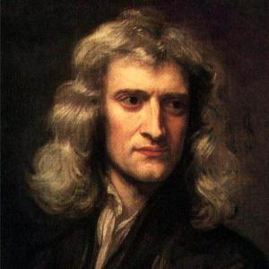

29. Լույս: Լույսի տարածումը համասեռ միջավայրում
Լույս: Լույսի տարածումը համասեռ միջավայրում
Լույսը շատ կարևոր դեր է կատարում մարդու կյանքում:
Լույսի շնորհիվ մենք կարողանում ենք ճանաչել մեզ շրջապատող աշխարհը:
Լույսն է, որ Արեգակից Երկիր հասնելով մեր մոլորակի վրա կյանքի գոյության համար անհրաժեշտ պայմանններ է ստեղծում:
Իսկ ի՞նչ է լույսը:
Լույսի բնույթի վերաբերյալ առաջին գիտական տեսությունը ստեղծել է Իսահակ Նյուտոնը 17-րդ դարում:

Ըստ Նյուտոնի. Լույսը կազմված է փոքրիկ մասնիկներից՝ կորպուսկուլներից, որոնք լուսատու մարմինը առաքում է բոլոր ուղղություններով՝ ճառագայթների երկայնքով:
Գրեթե միաժամանակ, հոլանդացի գիտնական Քրիստիան Հյուգենսը առաջարկել է լույսի ալիքային տեսությունը:
Ըստ Հյուգենսի. Լույսը առաձգական ալիք է՝ լույսի աղբյուրից հեռացող համակենտրոն գնդոլորտների տեսքով:
Վակումում լույսի տարածումը հերքեց լույսի՝ առաձգական ալիք լինելը: Սակայն 19-րդ դարի երկրորդ կեսին, էլեկտրամագնիսական ալիքների փորձնական ստացումը, լույսի և էլետրամագնիսական ալիքների արագության համընկնելը, թույլ տվեց Մաքսվելին և Հերցին իրենց աշխատություններում հաստատել լույսի ալիքային բնույթը և լույսը նույնացնել էլետրամագնիսական ալիքի հետ:
Լույս կամ տեսանելի ճառագայթում են անվանում 400−800ՏՀց (1ՏՀց=1012 Հց) հաճախության էլեկտրամագնիսական ալիքները, որոնք մարդու մոտ կարող են առաջացնել տեսողական զգայություններ
Տարբեր հաճախությունների ճառագայթումները մարդու մոտ տարբեր գույների զգայություններ են առաջացնում՝ սկսած կարմիրից՝ 400−480ՏՀց, մինչև մանուշակագույն՝ 670−800ՏՀց:
Հետագայում Ալբերտ Այնշտայնը՝ ֆոտոէֆեկտի երևույթը բացատրելիս, նորից անդրադարձավ լույսի մասնիկային բնույթին և ցույց տվեց, որ
ճառագայթելիս և կլանվելիս, լույսը իրենից ներկայացնում է լուսային մասնիկների՝ ֆոտոնների հոսք:
Այսպիսով լույսն ունի հատկությունների երկակիություն:
Սակայն անկախ այն բանից, թե ինչ բնույթ ունի լույսը՝ մասնիկների հոսք է, թե էլեկտրամագնիսական ալիք, այն ներկայացվում է որպես ճառագայթներ, որոնք սկսվում են լուսատու մարմնից և տարածվում բոլոր ուղղություններով՝ ցույց տալով լուսային էներգիայի տարածման ուղղությունը:
Տեսանելի տիրույթում ճառագայթող մարմնին անվանում են լույսի աղբյուր:
Եթե լույսի աղբյուրի չափերը շատ փոքր են մինչև լուսավորվող մարմին ընկած հեռավորության համեմատ, ապա այն անվանում են լույսի կետային աղբյուր:
Լույսի աղբյուրները բաժանվում են նաև բնական և արհեստական աղբյուրների:
Լույսի բնական աղբյուրներն են՝ Արեգակը, աստղերը, կայծակը, լուսատիտիկը և այլն:
Լույսի արհեստական աղբյուրներն են՝ ջերմային աղբյուրները (շիկացման լամպ, գազայրիչի բոց, մոմի լույս և այլն) և ոչ ջերմային աղբյուրները (ցերեկային լույսի լամպ, լուսադիոդ, լազեր, հեռուստացույցի կամ համակարգչի էկրան):
Լույսի աղբյուր կարող են լինել ոչ միայն լուսատու մարմինները, այլև այն մարմինները, որոնք անրադարձնում են իրենց վրա ընկած լույսը բոլոր ուղղություններով, դարռնալով տեսանելի:
Այդպիսի աղբյուրներ են՝ Լուսինը, մոլորակները և մեր շուրջը գտնվող բոլոր տեսանելի առարկաները:
Լույսի տարածումը համասեռ միջավայրում:
Ֆիզիկայի այն բաժինը, որն ուսումնասիրում է լույսի հետ կապված երևույթները, կոչվում է օպտիկա:
Օպտիկայի այն բաժինը, որն ուսումնասիրում է լուսային ճառագայթների տարածման օրինաչափությունները՝ հաշվի չառնելոով նրանց ալիքային հատկությունները, կոչվում է երկրաչափական օպտիկա:
Երկրաչափական օպտիկայի օրենքներից մի քանիսը հայտնագործվել է լույսի բնույթը պարզելուց շատ առաջ:
Այդպիսի օրենքներից է՝ լույսի ուղղագիծ տարածման օրենքը, որը ձևակերպել է հույն գիտնական Էվկլիդեսը՝ մ. թ. ա. երրորդ դարում:
Համասեռ, թափանցիկ միջավայրում լույսն ուղղագիծ է տարածվում
Դրանում կարելի է համոզվել փորձերի օգնությամբ, որոնք հարմար է կատարել լազերային ցուցափայտի արձակած ճառագայթով: Այս կերպ կարող ենք տեսնել, որ ապակե անոթի մեջ լցված ջրում՝ համասեռ, թափանցիկ միջավայրում, լազերային ճառագայթը տարածվում է ուղիղ գծով:
.jpg)
Լույսի ուղղագիծ տարածման հետևանք են հստակ ստվերները, որոնք ընկնում են անթափանց մարմիններից, երբ դրանք լուսավորվում են լույսի կետային աղբյուրից:
Օրինակ՝ եթե կետային լույսի աղբյուրի և էկրանի միջև անթափանց գունդ տեղադրենք, ապա էկրանի վրա մուգ շրջանի տեսքով ստվեր կհայտնվի:
Ստվերն այն տեղն է, որտեղ չի ընկնում լույսի աղբյուրի լույսը:
Եթե լույսի կետային աղբյուրի փոխարեն օգտագործվի ավելի մեծ չափեր ունեցող աղբյուր՝ լամպ, ապա հստակ ստվերի փոխարեն լուսավորված ֆոնին կստանանք ստվեր և կիսաստվեր:
Դա ոչ միայն չի հակասում, այլ, ևս մեկ անգամ հաստատում է լույսի ուղղագիծ տարածման օրենքը:
Այն մասում, որտեղ լույս չի ընկնում լամպի և ոչ մի կետից, լիակատար ստվեր է, իսկ այն տիրույթում, որտեղ լույսը միայն որոշ կետերից է ընկնում՝ առաջանում է կիսաստվեր:
Հսկայական չափերի ստվեր և կիսաստվեր գոյանում են Արևի և Լուսնի խավարումների ժամանակ:
Արևի խավարումն առաջանում այն դեպքում, երբ Լուսինը՝ Երկրի շուրջը իր պտույտի ժամանակ, ամբողջովին կամ մասնակիորեն ծածկում է Արեգակը:
Իսկ, երբ Լուսինն է հայտնվում Երկրագնդի առաջացրած ստվերի կոնի մեջ, ապա տեղի ունենում Լուսնի խավարում:
Լուսնի խավարումների ուսումնասիրությունը հնարավորություն է տվել Արիստոտելին՝ մ. թ. ա. չորրորդ դարում, եզրակացնել, որ Երկիրը գնդաձև է, ինչի վկայությունը Լուսնի վրա Երկրագնդի ստվերի շրջանաձև լինելն է: